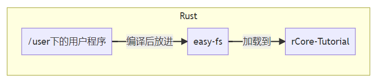

运行裸机 C 程序
建议至少做完 rCore-Tutorial ch6 再做这个实验。
实验准备
你需要下载用于交叉编译的工具链：https://musl.cc/riscv64-linux-musl-cross.tgz，解压后将里面的 bin 目录放到你的 PATH 中，然后尝试使用以下命令
riscv64-linux-musl-gcc --version
来检查是否安装成功。
如果忘了怎么安装这类包，可以看
rCore-Tutorial指导书第0章环境配置中安装 Qemu 模拟器一节，操作是类似的。
实验概述
在往年的实验中，有些同学会有这样一种感受：整个 rCore-Tutorial 是一个完整的项目，从内核到测例到文件系统都是用 Rust 连接的，修改任何一部分都需要做额外的兼容。就像下面这样：

但其实这中间都是二进制接口，只是被实验仓库里完善的脚本掩盖了。我们可以任意更换这其中的每个部分，而不需要做另外的适配：
graph LR;
subgraph 任意用户程序
Rust代码--编译-->ELF文件
C代码--编译-->ELF文件
end
subgraph 任意文件系统
ELF文件--放进-->easy-fs
ELF文件--放进-->FAT32
end
easy-fs-->块设备
FAT32-->块设备
subgraph 任意内核
块设备--挂载到-->rCore-Tutorial
块设备--挂载到-->其他内核
end
在本章中，我们将回顾用户程序的编译与加载流程，然后使用一个极简的 C 用户程序库代替 rCore-Tutorial 原有的 /user 测例，并修改上面这套编译、打包、加载的流程中的各个 Makefile，让我们的内核运行一个 C 语言的 helloworld。